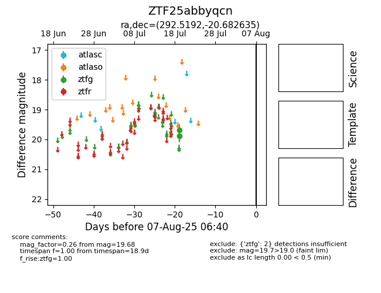

Target ZTF25abbyqcn at 2025-08-07 07:30, see:
FINK: fink-portal.org/ZTF25abbyqcn
Lasair: lasair-ztf.lsst.ac.uk/objects/ZTF25abbyqcn
ALeRCE: alerce.online/object/ZTF25abbyqcn
alt names
ZTF25abbyqcn (ztf,fink)
coordinates:
equatorial (ra, dec) = (292.5192,-20.68263)
galactic (l, b) = (18.1856,-17.50338)
photometry
last ztfg=19.68
2 ztfg detections
